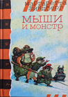

Möss och Monster

2004 |
Översättningar
|

Ryska |
|
"Möss och lämlar är huvudpersoner i Margareta Lindbergs underbara bok Möss och monster. Det är en fantasirik och spännande historia som också rymmer en hel del humor - små finesser som den vuxna läsaren stortrivs med. Dag Hedberg i Barn och Kultur Mössen under femmans klassrum i den idylliska Kullskolan får besök av de sorgliga resterna av ett vilsegånget lämmeltåg. De skulle nog ha haft en trevlig tid tillsammans om inte en liten djävul - greve Vlad der Muus - plötsligt stått i dörren.... Lämplig högläsningsbok från 7-10 år. Finns på bibliotek och i bokhandeln. Illustrationer: Kjell Midthun ISBN 91-29-64879-3. Utgiven av Rabén&Sjögren 2000. |